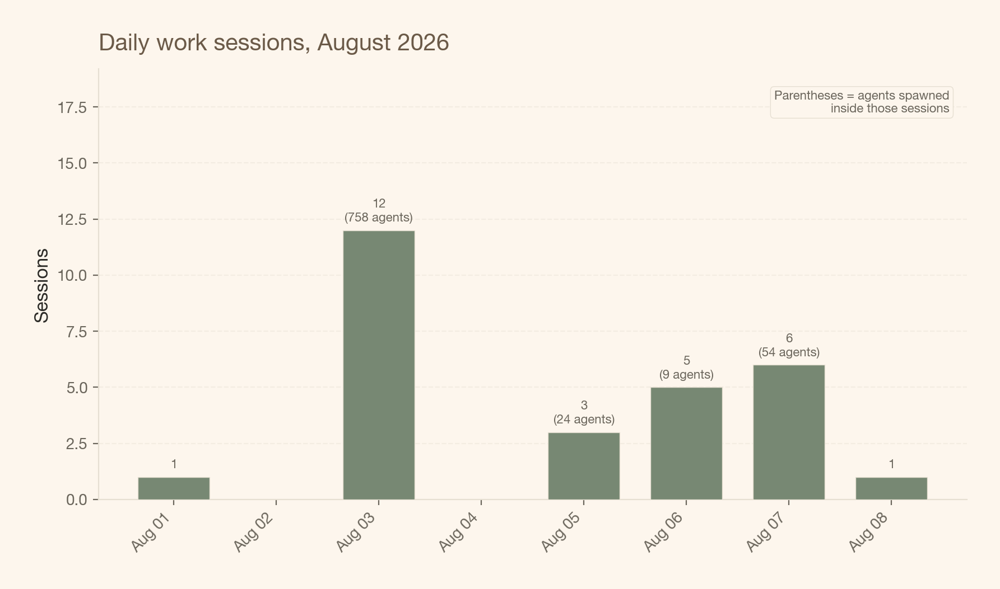
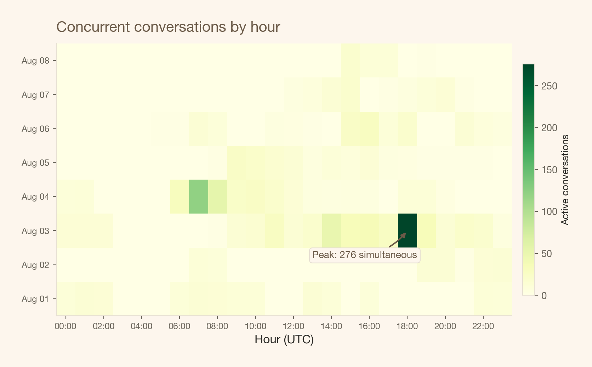
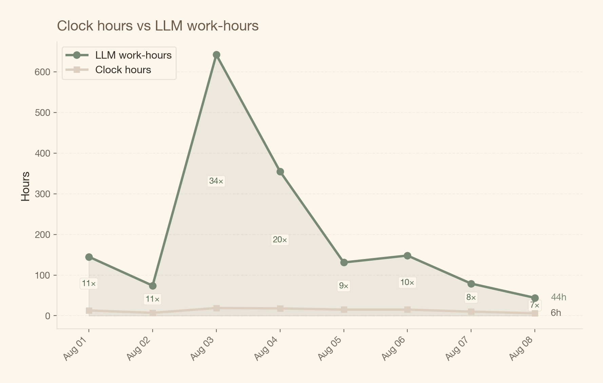
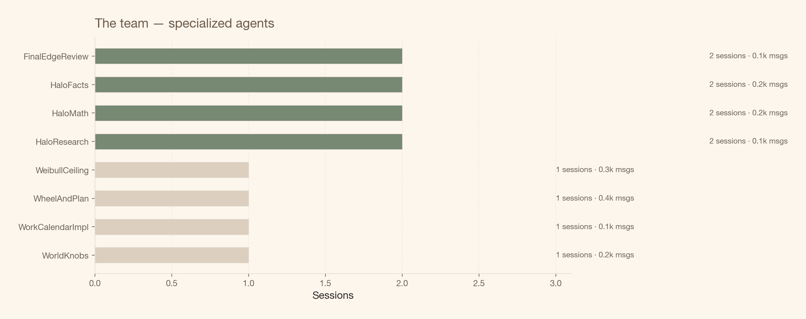
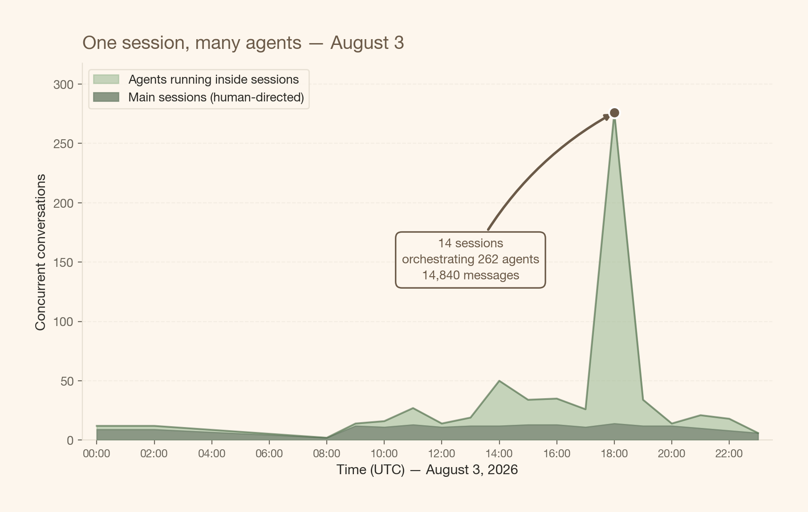

la facturación por hora murió, larga vida al modelo híbrido
he estado pensando en esto por un rato, y hoy finalmente cristalizó. estas son mis ideas — no algún framework probado, solo dónde estoy después de correr proyectos intensivos en IA por los últimos meses. de verdad me encantaría saber qué piensan otros freelancers y consultores de data science.
la facturación por hora siempre estuvo rota. la hora nunca fue una unidad real de trabajo — era un proxy. una ficción conveniente en la que ambos lados acordaron pretender que significaba algo.
la ficción siempre fue frágil
pensá en lo que “una hora facturable” realmente significaba, incluso antes de la IA. te sentás a las 9am. tenés una reunión a las 9:30. volvés del cambio de contexto a las 9:45. te interrumpe slack a las 10:02. para cuando estás de vuelta en flow, son las 10:15. ¿eso fue “una hora” de trabajo? el cliente recibió quizás 35 minutos de atención real. pero le facturaron 60.
este siempre fue el trato. todos lo sabían. la ficción funcionaba porque la alternativa — rastrear minutos de atención — era absurda. así que nos conformamos con la hora como proxy aproximado y seguimos.
el problema es que el proxy asumía un techo en la fragmentación. una persona, un enfoque, un cliente a la vez. la hora era una aproximación tolerable porque la varianza estaba acotada. podías perder 20 minutos en cambio de contexto, pero no podías perder 20 horas.
La IA eliminó ese techo.
cómo se ve realmente mi agosto
así se veían las 12 sesiones principales de trabajo el 3 de agosto. cada sesión es una sola conversación que yo dirijo — pero detrás de cada una, docenas de agentes de IA especializados corren en paralelo. reviewers, cazadores de bugs, implementadores, escritores de tests. yo orquesto; ellos ejecutan.

en un día tranquilo, 1 sesión. en un día pesado, 12. y cada una está corriendo una pequeña firma adentro.
cómo se ve la concurrencia por hora
el heatmap de abajo muestra cuántas conversaciones estaban activas en cada hora de cada día. la intensidad del color te dice cuánto trabajo paralelo estaba sucediendo — sesiones más todos los agentes corriendo dentro de ellas.

mirá el 3 de agosto, 18:00 UTC — ahí es donde el color se pone más oscuro. vamos a volver a esa hora.
la brecha que mata a la hora
este es el gráfico que importa. la línea beige son las horas de reloj — las horas que estuve realmente en mi escritorio. la línea verde son las horas de trabajo LLM: la suma de todas las horas-agente del día. si 3 agentes corren 1 hora cada uno, eso son 3 horas-LLM, aunque solo fue 1 hora de reloj.

se mueven diferente. las horas de reloj oscilan entre 6 y 19 — ese es el techo de un día humano. las horas de trabajo LLM van de 44 a 642. el 3 de agosto, 19 horas de reloj produjeron 642 horas-LLM. un multiplicador de 34×.
y aquí está la cosa: cuando eras una persona haciendo una cosa, el proxy era suficientemente cercano. ahora la brecha entre tu hora de atención y el valor entregado es tan amplia que no solo falla — activamente engaña.
la desventaja competitiva
y esto es lo que me preocupa. si sigo facturando por hora, no solo estoy usando un modelo desactualizado — creo que me estoy poniendo en una desventaja estructural.
por qué: tu competidor que adoptó pricing basado en resultados puede entregar 34× el trabajo en el mismo tiempo de reloj, y cobrar basado en el valor de ese trabajo. vos estás facturando por tus horas de atención. ellos facturan por el output. al cliente no le importa cuántas horas gastaste — le importa lo que llegó.
y cuanto más sigas facturando por hora, más valor estás dejando sobre la mesa — o peor, más estás cobrando de más por trabajo que tomó una fracción de la atención que estás facturando.
el equipo detrás de las sesiones
estos no son chatbots genéricos. cada agente tiene un rol específico — de la misma forma que una firma de consultoría tiene analistas, reviewers y líderes de proyecto.

los reviewers adversariales stress-testean el código. los reviewers de bugs cazan errores lógicos. los testers de edge cases exploran condiciones límite. los implementadores escriben el código real. los reviewers de tests validan la suite de tests. y yo estoy en el medio, orquestando todo.
el momento pico
el 3 de agosto a las 18:00 UTC merece su propio gráfico.

14 sesiones. 262 agentes. casi 15,000 mensajes. un humano. intentá facturar eso por hora.
lo que estoy probando: el modelo híbrido
entonces, ¿qué realmente funciona? no estoy seguro todavía, pero esto es lo que he estado experimentando:
tarifa base fija — cubre el trabajo, los costos de herramientas de IA y un margen razonable. igual para cada cliente sin importar su tamaño. justo es justo.
kicker proporcional — digamos 10% del uplift medido, pagado solo después de una ventana de medición definida (típicamente 3 meses). aquí es donde ocurre la alineación de valor.
la belleza está en cómo resuelve las tensiones centrales:
- la base es justa — mismo trabajo, mismo piso, sin juegos de negociación
- el kicker escala con el impacto, no con la cuenta bancaria del cliente
- el período de medición cierra la brecha entre entrega y evidencia
la clave es acordar métricas y líneas base antes de que empiece el proyecto. ambos lados saben exactamente qué dispara el bono. sin ambigüedad, sin “ya lo resolvemos después.”
no es pricing puro basado en resultados
esto es importante para mí. el pricing puro basado en resultados se siente riesgoso para todos — estás apostando toda tu compensación a variables que no controlás completamente. lo que estoy describiendo es pricing fijo informado por resultados. obtenés estabilidad de la base, y alineación del kicker.
creo que aquí es donde están llegando los profesionales reflexivos. al menos los que he hablado. no porque esté de moda, sino porque parece funcionar para ambos lados.
la hora siempre fue un proxy. la IA no lo rompió — solo hizo que la brecha entre el proxy y la realidad fuera demasiado amplia para ignorar.
estas son mis ideas personales basadas en mi propia experiencia. no estoy diciendo que esta es la respuesta correcta — solo es donde he llegado después de correr proyectos intensivos en IA por los últimos meses. si sos freelancer o consultor lidiando con las mismas preguntas, de verdad me encantaría saber cómo lo estás pensando. ¿qué te está funcionando? ¿qué me estoy perdiendo?